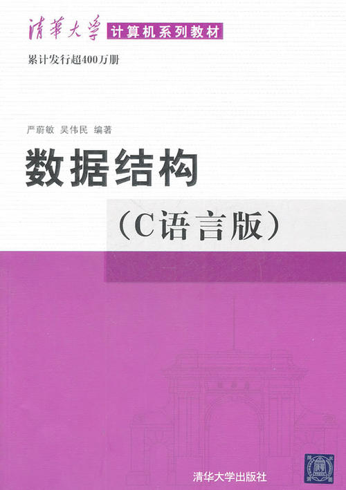
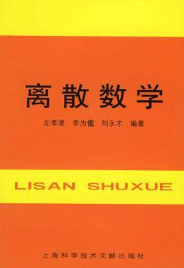
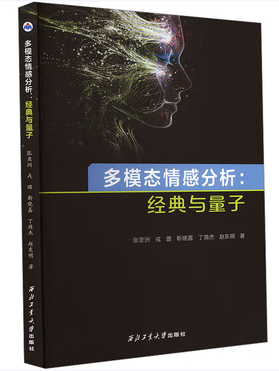
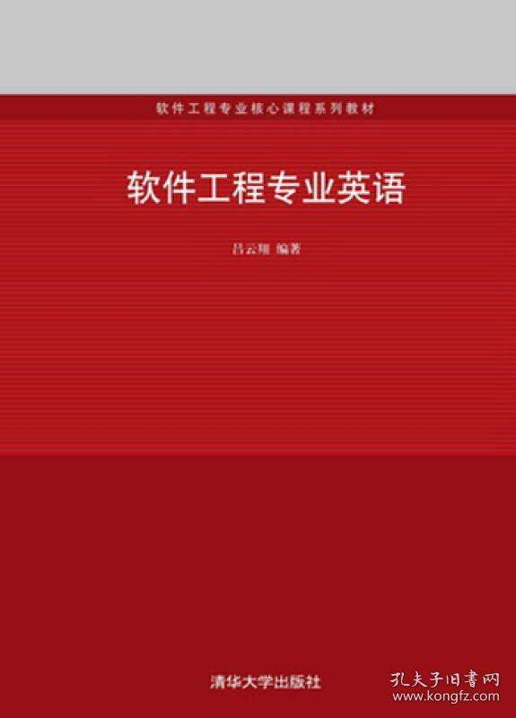
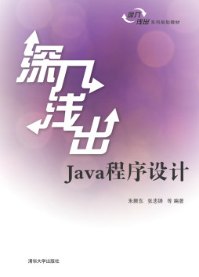
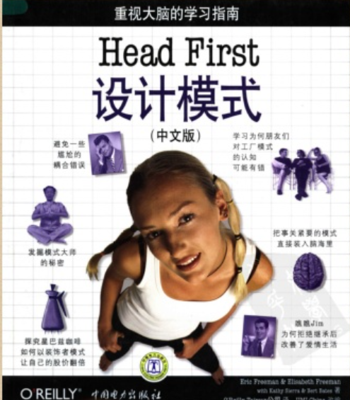

About Me
I am currently an Associate Researcher at the College of Intelligence and Computing, Tianjin University.
I received my Ph.D. degree in Computer Applications Technology from Tianjin University in 2020.
I was a Postdoctoral Fellow at the Tianjin University–China Mobile Communications (Tianjin) Joint Laboratory in 2022,
and also a Postdoctoral Fellow at the School of Nursing, The Hong Kong Polytechnic University (PolyU), from 2022 to 2024.
I was selected as an Outstanding Youth Academic Talent in 2020.
In recognition of my academic influence, I was listed among the world's top 2% of scientists by Stanford University.
I was also honored with the Best Paper Nomination Award at PRCV 2025.
Over the past five years, I have published more than 50 papers,
including CCF-ranking A/B conference papers (e.g., NeurIPS, AAAI, IJCAI, WWW, EMNLP, CIKM, NAACL)
and top journal papers (e.g., IEEE TFS, IEEE TAI, IEEE TAC, IEEE TITS, IEEE TCE, ACM TOIS, ACM TOIT, ACM TOMM,
ACM CSUR, INFFUS, TCS, NN, AI, ACM TALLIP).
张亚洲，豫北人也，生于斯，长于斯。北游冰津，中客郑城，复浮南海，历粤城而归。貌不逾中，性介而傲，好慢游，喜嚣论，不可以事贾生。少时沉酣剑侠，耽嗜幻想，常怀顾盼之情，感白头之慨。三十载奔趋四方，尺寸靡就。岁晏气索，平旦自讼，乃知平生所慕，非慕姜尚之韬，非希李玄之仙，但愿得闲曹一席，公事了却，携三五旧雨，浅斟微醺，仰睇浮云，俯察尘事；左顾稚子，右挈山妻，以此为至乐。他年委化，当瘗一坏之土，立片石而题曰：“为情而迷，以梦为生。”若魂兮有知，与无知焉，吾皆无憾矣。
Work Experience
2024/09-Now, 天津大学, 智算学部, 副研究员.
2022/11-2024/09, 香港理工大学, 护理学院, 博士后研究员.
2020/01-2024/07, 郑州轻工业大学, 软件学院, 讲师/班主任.
Research Interests
Large Language Model(大模型), Sentiment Analysis(情感分析), Quantum Cognition(量子认知), Sarcasm Detection(讽刺检测), Affective Reasoning(情感推理), Natural Language Processing(自然语言处理)
常见问题——关于研究生培养
Q1: Push吗？
R1: 不push, 差不多就行。
Q2: 有没有早晚打卡？
R2: 没有。
Q3: 实验室能不能打游戏？
R3: 反正我经常打。
Q4: 什么培养模式？
R4: 放养式、自由式、散漫式。
Q5: 需要什么类型的学生？
R5: 最好是带我发CNS的，否则也不挑。
Q6: 研三能不能实习？
R6: 没问题。
Recent Activities
- Jan. 26, 2025. Our paper was accepted by ICLR.
- Nov. 26, 2025. Our paper was accepted by IEEE TNNLS.
- Nov. 03, 2025. Our paper was accepted by Transactions on Machine Learning Research.
- Sep. 25, 2025. 入选斯坦福大学全球前2%顶尖科学家（年度影响力榜）.
- Sep. 23, 2025. 获得PRCV 2025最佳论文提名奖.
- Aug. 28, 2025. Our paper was accepted by IEEE TAC.
- Jan. 20, 2025. Two papers were accepted by WWW.
- Dec. 20, 2024. 入选国家海外博士后引才专项.
Show more...
- Jul. 22, 2025. Our paper was accepted by NN.
- Dec. 10, 2024. Our paper was accepted by AAAI.
- Oct. 10, 2024. Our paper was accepted by TST.
- Nov. 27, 2023. Our paper was accepted by ACM TOMM.
- Oct. 15, 2023. Our paper was accepted by IEEE TCE.
- Oct. 12-15, 2023. Attended NLPCC and PRCV 2023, Foshan and Xiamen.
- Sep. 22, 2023. Big congratulations. Our paper was accepted by NeurIPS (CCF-A).
- Jul. 19, 2023. Our paper was accepted by IEEE TAI.
- Jul. 17, 2023. Our paper was accepted by NLPCC.
- Jul. 14, 2023. Our paper was accepted by ACM TALLIP.
- Jun. 21, 2023. 获批中国科学基金博士后面上基金项目，资助率约16%.
- May 08, 2023. Our paper was accepted by IEEE TAC, finally.
- Apr. 15, 2023. Our paper was accepted by ACM TOIS.
- Jan. 03, 2023. Our paper was accepted by INFFUS.
- Aug. 24, 2022. Our paper was accepted by IEEE T-ITS.
- Aug. 12-15, 2022. Attended Chinese Conference on Affect Computing暨情感计算专委会年度会议, CCAC 2022, Suzhou.
- Jul. 10-14, 2022. Attended NAACL 2022, Session Chair, Online.
- Jul. 04, 2022. Two paper were accepted by NLPCC 2022.
- Apr. 25, 2022. Our paper was accepted by ACM TOIT.
- Apr. 07, 2022. Our paper was accepted by NAACL.
- Mar. 14, 2022. Our paper was accepted by ACM TOMM.
- Mar. 08, 2022. Our paper was accepted by ACM Computing Surveys.
- Dec. 04, 2021. I just had my first child, lol.
- Nov. 19, 2021. Our paper was accepted by ECIR 2022.
- Sep. 05, 2021. Our paper was accepted by EMNLP Findings.
- Jul. 23-24, 2021. CAAI情感智能专委会年度会议暨多模态情感计算研讨会, Beijing.
- Jul. 10-11, 2021. Attended Chinese Conference on Affect Computing, CCAC 2021, Beijing.
- Apr. 01, 2021. My paper was accepted in IEEE Trans. on Fuzzy System.
- Nov. 30-Dec. 07, 2020. Hold the wedding ceremony.
- Oct. 06, 2020. My paper was accepted in Neural Networks Journal.
- Sep. 18, 2020. My project was funded by Youth Program of National Natural Science Foundation of China.
- Mar. 26, 2020. The review committee member of AACL-IJCNLP 2020.
- Feb. 02-Jun. 10, 2020. The review committee member of ACL, EMNLP and NLPCC 2020.
- Nov. 03-04, 2019. Attended The ACM International Conference on Information and Knowledge Management (CIKM 2019), Beijing.
- Aug. 12-16, 2019. Attended the 28th International Joint Conference on Artificial Intelligence (IJCAI 2019) and made oral presentation, Macau University, Macau.
- May 1-Dec. 30, 2019. Visited Beijing Engineering Research Center of High Volume Language Information Processing, Beijing Institute of Technology, Beijing.
- Sep. 14-17, 2018. Co-organized and attended Proceedings of the 2018 ACM SIGIR International Conference on Theory of Information Retrieval (ICTIR 2018), Tianjin.
- Mar. 26-29, 2018. Attended ECIR 2018 and made oral presentation, Grenoble University, France.
- Aug. 14-16, 2017. Organized the workshop of quantum cognition and information retrieval, Tianjin University, Tianjin.
- Jul. 01, 2013-2014. Visited pattern recognition research center, Harbin Institute of Technology, Harbin.
Awards and Academic Employment
- 斯坦福大学全球前2%顶尖科学家（2025年）
- 国家海外博士后专项人才计划（教职）
- 编辑委员会 (Associate Editor of Sarcasm Language Track), IEEE Transactions on Affective Computing [SCI-1], 2025.12-Now
- 高级编辑 (Senior Editor), American Joυrnаl of Artificial Intelligence, 12/05/2025-12/05/2028
- Workshop Chair, MER 2025
- 编辑委员会 (Editorial Board), Journal of Intelligent Information Systems [SCI-3], 2024-Now
- 《程序设计技术》 获批第二批国家级一流本科课程（马军霞, 杨华, 孙海燕, 陈锐, 张亚洲）, 2023
Show more...
- 编辑委员会, Electronics [SCI-4], 2025.11-Now
- CSCIED科技核心评价数据库, 评委
- PRCV 最佳论文提名奖, 2025
- 1. 中科院SCI二区 Frontiers in Neuroscience 特刊 "Pretrained and Multimodal Representation Learning for EEG, Physiological, and Language-related Time Series"，客座编辑, 2025
- 2. 中科院SCI四区 Electronics 特刊 "The Future of LLM Architectures"，客座编辑, 2025
- 委员, 情感计算专委会, 中文信息学会, 2021
- 委员, 情感智能专委会, 中国人工智能学会, 2021
- 《Web 框架技术》入选河南省本科高校研究性教学示范课程项目（第四: 张志锋, 黄艳, 毛艳芳, 张亚洲, 谷培培, 马军霞, 李玉华, 赵晓君）, 2022
- 以提升工程实践能力为中心的专业硕士专业课程智慧教学模式探索与实践, 本科高校研究性教学示范课程项目一般项目 （第五: 郑倩, 崔建涛, 毕丽华, 黄敏, 张亚洲, 陈锐, 师夏阳, 马军霞, 谷培培, 刘克祥）, 2022
- 河南省科技进步奖, 二等奖, 多模态行为与情感智能感知关键技术及应用, (排名: 5/10), 2024
- 郑州轻工业大学优秀硕士学位论文指导老师, 2024
- Session Chair, NAACL 2022
- 二等奖 [324-56], 河南省第五届自然科学学术奖, 河南省人力资源和社会保障厅, 2022
- 二等奖 [21837], 河南省教育厅科技成果奖, 2022
- 一等奖 [C语言], 二等奖 [Java语言], 第三届全国高校计算机能力挑战赛 [决赛段], 全国高等学校计算机教育研究会, 2022
- 青年访问学者, 信息物理社会可信服务计算教育部重点实验室, 重庆大学, 2022-2023
- 校青年骨干教师, 2021
- 校优秀青年学术人才 (特聘教授), 2020
Publications [Google Scholar]
[First & Co-first Author]
- Yazhou Zhang, Chunwang Zou, Bo Wang, Jing Qin, Prayag Tiwari. Commander-GPT: Dividing and Routing for Multimodal Sarcasm Detection. Transactions on Machine Learning Research. 11/2025.
- Yazhou Zhang, Chunwang Zou, Zheng Lian, Prayag Tiwari, Jing Qin. SarcasmBench: Towards Evaluating Large Language Models on Sarcasm Understanding. IEEE Transactions on Affective Computing. 16(4):2560-2578, 2025. [SCI-1]
- 张亚洲, 刘祈蒙, 赵彬彬, 戎璐, 李秋池, 李爱军. 语音大模型：架构、训练与挑战. 电子学报. 53(9): 3444-3472, 2025. [CCF-A]
- Yazhou Zhang, Chunwang Zou, Qimeng Liu, Lu Rong, Ben Yao, Zheng Lian, Qiuchi Li, Peng Zhang, Jing Qin. Are MLMs Trapped in the Visual Room? PRCV 2025. Accept, 2025. [CCF-C, 最佳论文提名奖]
- Yazhou Zhang, Mengyao Wang, Qiuchi Li, Prayag Tiwari, Jing Qin. Pushing The Limit of LLM Capacity for Text Classification. The Web Conference (WWW). 1524-1528, 2025. [CCF-A]
Show more...
- Yazhou Zhang, Mengyao Wang, Youxi Wu, Prayag Tiwari, Qiuchi Li, Benyou Wang, Jing Qin. NurValues: Real-World Nursing Values Evaluation for Large Language Models in Clinical Context. The Fourteenth International Conference on Learning Representations (ICLR), 2026.
- Yazhou Zhang, Yang Yu, Xiangkai Wang, Xiang Li, Hui Liang, Prayag Tiwari. Multi-Affection Prompt Learning for Sentiment, Emotion and Sarcasm Joint Detection in Conversations. Tsinghua Science and Technology (TST). 31(3):1819-37, 2026 [SCI-1]
- Yazhou Zhang, Yang Yu, Mengyao Wang, Min Huang, M. Shamim Hossain. Self-Adaptive Representation Learning Model for Multi-Modal Sentiment and Sarcasm Joint Analysis. ACM TOMM. 20(5), No.125: 1-17, 2024. [CCF-B]
- Zhang Y, Yu He, Rui Chen, Prayag Tiwari, Abdulmotaleb El Saddik, M. Shamim Hossain. A Dual Channel Cyber-Physical Transportation Network for Detecting Traffic Incidents and Driver Emotion. IEEE Transactions on Consumer Electronics (IEEE TCE). 70(1):1766-1774, 2024. [SCI-2]
- Zhang Y, Yang Yu, Qing Guo, Benyou Wang, Dongming Zhao, Sagar Uprety, Dawei Song, Jing Qin, Qiuchi Li. CMMA：Benchmarking Multi-Affection Detection in Chinese Multi-Modal Conversations. Thirty-seventh Conference on Neural Information Processing Systems (NeurIPS). 36, 2024. [CCF-A]
- Zhang Y, Yu Y, Zhao DM, Li ZH, Wang B, Hou YX, Tiwari P, Qin J. Learning Multi-Task Commonness and Uniqueness for Multi-Modal Sarcasm Detection and Sentiment Analysis in Conversation. IEEE Transactions on Artificial Intelligence (IEEE TAI). 5(3):1349-1361, 2024.
- Zhang Y, Wang MY, Rong L, Yu Y, Zhao DM, Qin J. ChatGPT可否充当情感专家？调查其在情感与隐喻分析的潜力. The 12th CCF International Conference on Natural Language Processing and Chinese Computing (NLPCC2023). 60(1): 43-52, 2024. [CCF-C, 推荐到北京大学学报自然科学版]
- Zhang Y, Jia A, Wang B, Zhang P, Zhao DM, Li Pu, Hou YX, Jin XJ, Song DW, Qin J. M3GAT: A Multi-Modal Multi-Task Interactive Graph Attention Network for Conversational Sentiment Analysis and Emotion Recognition. ACM Transactions on Information Systems (ACM TOIS). 42(1), No. 13: 1-32, 2023. [CCF-A]
- Zhang Y, Wang JL, Liu YC, Rong L, Zheng Q, Song DW, Tiwari P, Qin J. A Multitask Learning Model for Multimodal Sarcasm, Sentiment and Emotion Recognition in Conversations. Information Fusion (INFFUS). 93：282-301, 2023. [SCI-1, IF=17.56]
- Zhang Y, Tiwari P, Zheng Q, El Saddik A, Hossain S. A Multi-Modal Coupled Graph Attention Network for Joint Traffic Event Detection and Sentiment Classification. IEEE Transactions on Intelligent Transportation Systems (IEEE T-ITS). 24(8): 8542-8554, 2023. [SCI-1, IF=9.55]
- Zhang Y, Ma D, Tiwari P, Zhang C, Masud M, Shorfuzzaman M, Song D. Stance Level Sarcasm Detection with BERT and Stance-Centered Graph Attention Networks. ACM Transactions on Internet Technology (ACM TOIT). 23(2), No.27: 1-21, 2023. [CCF-B]
- Zhang Y, Tiwari P, Rong L, Chen R, AlNajem N, Shamim Hossain M. Affective Interaction: Attentive Representation Learning for Multi-Modal Sentiment Classification. ACM Transactions on Multimedia Computing, Communications, and Applications (ACM TOMM). 18 (3):1-23, 2022. [CCF-B]
- Zhang Y, He Y, Rong L, Ding YJ. A Hybrid Model for Depression Detection With Transformer and Bi-directional Long Short-Term Memory. 2022 IEEE International Conference on Bioinformatics and Biomedicine (BIBM). pp.2727-2734, 2022. [CCF-B]
- Li X, Zhang Y*, Tiwari P, Song D, Hu B, Yang M, et al. EEG based Emotion Recognition: A Tutorial and Review. ACM Computing Surveys (CSUR). 55 (4): 1-57, 2022. [SCI-1, Co-first Author, IF=14.32]
- Zhang Y, Yu Y, Zhu S, Chen R, Rong L, Liang H. A Quantum Probability Inspired Network for Dialogue Sarcasm Recognition. Acta Electronica Sinica (电子学报). 50 (8): 1885-1895, 2022. [CCF-A 中文, 精选论文]
- Zhang Y, Rong L, Li X, Chen R. Multi-Modal Sentiment and Emotion Joint Analysis with A Deep Attentive Multi-Task Learning Model. European Conference on Information Retrieval. Online, pp.518-532, 2022. [CCF-C]
- Zhang Y, He Y, Rong L. SentiImgBank: A Large Scale Visual Repository for Image Sentiment Analysis. Chinese Conference on Pattern Recognition and Computer Vision (PRCV). Xiamen, pp.223-232, 2023. [CCF-C]
- Zhang Y, Li X, Rong L, Tiwari P. Multi-Task Learning for Jointly Detecting Depression and Emotion. 2021 IEEE International Conference on Bioinformatics and Biomedicine (BIBM). pp.3142-3149, 2021. [CCF-B]
- Zhang Y, Rong L, Li X, Tiwari P, Zheng Q, Liang H. MedSeq2Seq: A Medical Knowledge Enriched Sequence to Sequence Learning Model for COVID-19 Diagnosis. 2021 IEEE International Conference on Bioinformatics and Biomedicine (BIBM). pp.3181-3184, 2021. [CCF-B]
- Li X, Zhang Y*, Li J. Supercomputer Supported Online Deep Learning Techniques for High Throughput EEG Prediction. 2021 IEEE International Conference on Bioinformatics and Biomedicine (BIBM). pp.2392-2398, 2021. [CCF-B, Co-first Author]
- Liu Y, Zhang Y*, Li Q, Wang B, Song D. What Does Your Smile Mean? Jointly Detecting Multi-Modal Sarcasm and Sentiment Using Quantum Probability. Findings of EMNLP. 2021. [CCF-B, Co-first Author]
- Zhang Y, Liu Y, Li Q, Tiwari P, Wang B, et al. CFN: A Complex-valued Fuzzy Network for Sarcasm Detection in Conversations. IEEE Transactions on Fuzzy System. 29(12):3696-3710, 2021. [SCI-1, IF=12.25]
- Zhang Y, Tiwari P, Song D, Mao X, Wang P, et al. Learning Interaction Dynamics with an Interactive LSTM for Conversational Sentiment Analysis. Neural Networks. vol 133:40-56, 2021. [SCI-1, IF=9.65]
- Zhang Y, Song D, Li X, Zhang P, et al. A Quantum-like Multimodal Network Framework for Modeling Interaction Dynamics in Multiparty Conversational Sentiment Analysis. Information Fusion. vol 62: 14-31, 2020. [SCI-1, IF=17.56]
- Zhang Y, Rong L, Song D, Zhang P. A Survey on Multimodal Sentiment Analysis. Pattern Recognition and Artificial Intelligence, 33(5), 426-438, 2020. [EI, CCF-B]
- Zhang Y, Zhao Z, Wang P, Li X, Rong L, Song D. ScenarioSA: A Dyadic Conversational Database for Interactive Sentiment Analysis. IEEE Access. vol.8:90652-64, 2020. [SCI-2]
- Zhang Y, Song D, Zhang P, et al. A Quantum-inspired Sentiment Representation Model for Twitter Sentiment Analysis. Applied Intelligence. 49(8):3093-108, 2019. [SCI-2]
- Zhang Y, Li Q, Song D, Zhang P, Wang P. Quantum-Inspired Interactive Networks for Conversational Sentiment Analysis. in 28th International Joint Conference on Artificial Intelligence (IJCAI 2019), vol.752:21-40, 2019. [CCF-A]
- Zhang Y, Song D, Zhang P, Wang P, Li J, et al. A Quantum-inspired Multimodal Sentiment Analysis Framework. Theoretical Computer Science. vol.752:21-40, 2018. [CCF-B]
- Zhang Y, Song D, Li X, Zhang P. Unsupervised Sentiment Analysis of Twitter Posts Using Density Matrix Representation. In European Conference on Information Retrieval 2018 Mar 26. pp. 316-329, 2018. [CCF-C]
[Corresponding Author]
- Ben Yao, Qiuchi Li, Yazhou Zhang*, Siyu Yang, Bohan Zhang, Prayag Tiwari, Jing Qin. Adaptive Boosting LLMs for Text Classification. IEEE Transactions on Neural Networks and Learning Systems (IEEE TNNLS), Accept, 2025. [SCI-1]
- Mengyao Wang, Yazhou Zhang*, Chenyu Ren, Qiuchi Li, Prayag Tiwari, Benyou Wang, Jing Qin. Adaptive Boosting LLMs for Text Classification. IEEE Transactions on Neural Networks and Learning Systems (IEEE TNNLS), Accept, 2025. [SCI-1]
- Peiyi Zhang, Yazhou Zhang*, Bo Wang, Lu Rong, Prayag Tiwari, Jing Qin. Edu-Values: Towards Evaluating the Chinese Education Values of Large Language Models. The Web Conference (WWW), 1519-1523, 2025. [CCF-A]
- Ben Yao, Yazhou Zhang*, Qiuchi Li, Jing Qin. Is Sarcasm Detection A Step-by-Step Reasoning Process in Large Language Models? AAAI-25, 39(24): 25651-25659, 2025. [CCF-A]
- Jia A, Zhang Y*, Uprety S, Song DW. Learning interactions across sentiment and emotion with graph attention network and position encodings. Pattern Recognition Letters, 180:33-40, 2024. [CCF-C]
- Ma JX, Rong L, Zhang Y*, Tiwari P. Moving From Narrative to Interactive Multi-Modal Sentiment Analysis: A Survey. ACM TALLIP, In Press, 2023. [CCF-C]
- Liu Y, Zhang Y*, Song D. A Quantum Probability Driven Framework for Joint Multi-Modal Sarcasm, Sentiment and Emotion Analysis. IEEE Transactions on Affective Computing, 15(1):326-41, 2023. [SCI-1, IF=13.99]
Show more...
- Jia A, He Y, Zhang Y*, Uprety S, Song D, Lioma C. Beyond Emotion: A Multi-Modal Dataset for Human Desire Understanding. NAACL 2022. [CCF-B, TOP]
- Yu Y, Rong L, Wang MY, Huang M, Zhang Y*, Ding YJ. Prompt Learning for Multi-modal COVID-19 Diagnosis. IEEE BIBM, 2022. [CCF-B]
- Wang P, Zhang Y*, Li X, Hou Y, Song D. Does tang poetry affect human emotional state? A pilot study by EEG. IEEE BIBM, 2017. [CCF-B]
Patents
- Zhang Y, Song D. 一种基于量子理论的多模态情感分析方法. 2020. [201710916759.8]
- Zhang Y, Rong L, Zhang HJ, Shen BH. 一种笔记本用网线防脱装置. 2022. [202222995306.8]
- Zhang Y, Yu Y, Rong L. 一种基于多任务学习的对话讽刺和情感联合分析方法. 2022. [202211368781.0]
- Zhao DM, Zhang Y, Wang MY. 一种基于提示学习的多情感任务联合分析方法. 2023. [202310312871.8]
- Rong L, Zhang Y, Zi LR, Zuo SY, Zhang Y. 一种图书档案运输装置. 2021. [202122863043.0]
- Zhang Y, Ma J, Cui J, Li P, Zhu S. 一种基于量子理论的无监督文本情感分析方法. 2021. [202110113463.9]
- Ma J, Zhang Y, Chen R, Chu Y. 一种基于交互式长短期记忆网络的对话情感分析方法. 2021. [202110069022.3]
Books
- 张亚洲, 戎璐, 靳晓嘉, 丁漪杰, 赵东明. 多模态情感分析：经典与量子. 西北工业大学出版社. ISBN9787561296202, 2024.11.
- 陈锐, 张亚洲, 崔建涛, 李璞等. 深入浅出数据结构与算法. 清华大学出版社. ISBN9787302627739, 2023.4.
- 陈锐, 张建伟, 马军霞, 马欢, 谷培培, 张亚洲等. 数据结构习题精解. 清华大学出版社. ISBN9787302586425, 2021.4.
Projects
-
国家海外博士后引才专项（教职）
[人才项目]
2025/01-2027/12 -
国家社科重大项目课题负责人
[中文大语言模型副语言能力评测方法研究: 课题3 评测方法研究]
2026/01-2028/12 -
企业横向课题
[AI生成专利新创性报告及技术交底书的产品开发]
2025/05-2026/04 -
河南省自然科学基金面上项目
[基于多任务学习的情感识别方法研究]
2024/01-2025/12, 242300421412 -
中国博士后科学基金第73批面上项目
[融合多模态、上下文与多任务：基于深度学习的情感识别方法研究]
2023/07-2024/08, 2023M733907 -
重庆大学信息物理社会可信服务计算教育部重点实验室开放基金课题
[跨模态语言-视觉情感识别技术研究]
2022/07-2024/06, CPSDSC202103 -
企业横向课题
[脑部疾病检索系统的设计与实现]
2021/11-2022/12, 20220305055943 -
河南省重点研发与科技推广专项（科技攻关）
[Quantum Probability Driven Multi-Modal Multi-Task Emotion Recognition Model]
2022/01-2023/12, 222102210031 -
南京大学计算机软件新技术国家重点实验室开放课题
[量子概率驱动的多模态感情分析模型]
2021/06-2023/05, KFKT2021B41 -
国家自然科学基金青年基金
[Research on Quantum-Like Sentiment Interactive Model for Interactive Dialogues]
2021/01-2023/12, 62006212 -
河南省博士基础科研基金
[Research on Quantum-like Multimodal Sentiment Analysis Models]
2020/01-2022/12, 13501050028
Teaching

离散数学

心理与行为计算

计算机专业英语

Java 程序设计技术

设计模式
Research Team
[TJU]
[PolyU]
[ZZULI]
[ZZULI] 俞洋，2020级，已毕业；去向：兰州大学读博。研究方向：多模态对话情感分析。
[ZZULI] 和玉，2021级，已毕业；去向：郑州银行软件开发部。研究方向：讽刺、欲望识别。
[ZZULI] 王梦遥，2022级，已毕业；去向：重庆大学读博。研究方向：多模态讽刺检测。

[ZZULI] 刘祈蒙，2023级。研究方向：情感大语言模型、思维链。
[ZZULI] 邹春旺，2023级。研究方向：讽刺理解大语言模型。
[BIT]

Contact
yzhou_zhang@tju.edu.cn
Tianjin University, Tianjin, China
(+86)18222832966